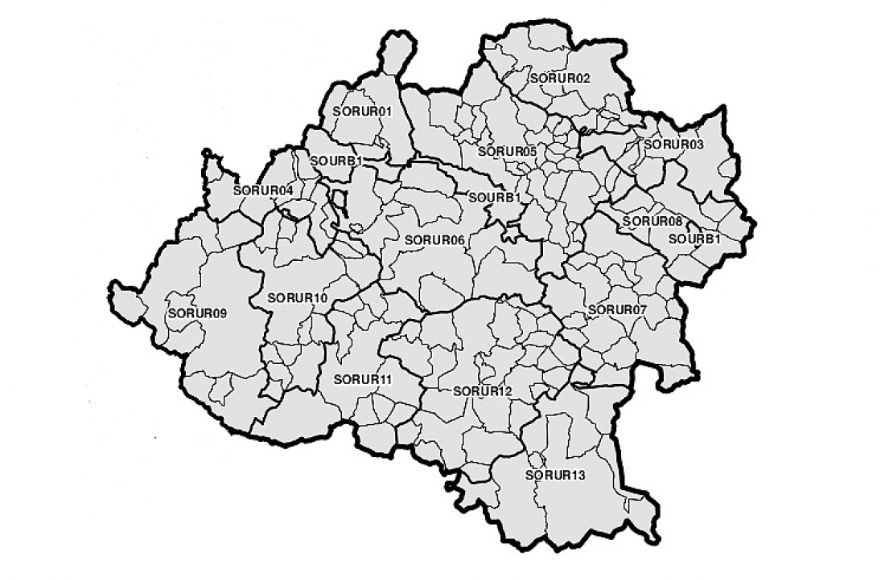
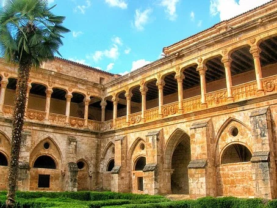

PROVINCIASAVILABURGOS LEON PALENCIA SALAMANCA SEGOVIA VALLADOLID ZAMORA ENLACES EXTERNOS VOLVER AL INCIO |
SORIAÍNDICE
1. LOCALIZACIÓNSoria se encuentra al este de la comunidad 2. LOCALIDADES PRINCIPALESPrincipales ciudades:Soria, Almazán, El Burgo de Osma, Ólvega, San Esteban de Gormaz, Ágreda y Golmayo Ubicacion de Soria capital: 3. GEOGRAFÍA DE LA PROVINCIACoordenadas geograficas: Latitud: 41.7636, Longitud: -2.46492, 41° 45′ 49″ Norte, 2° 27′ 54″ Oeste Superficie: 27.177 hectáreas, 271,77 km² Altitud: 1065 m Clima: mediterraneo Tiempo actual de Soria: 4. HISTORIANo es en el espacio que actualmente ocupa Soria donde encontramos los vestigios más antiguos de su historia, sino a ocho kilómetros al noroeste de la ciudad, en el monte Valonsadero. Dos mil años antes del nacimiento de Cristo se establecieron en ese paraje grupos de pastores que plasmaron mediante pinturas esquemáticas rupestres una serie de escenas de su vida cotidiana, de las que se han localizado 35 estaciones. Cerca también se encuentra uno del los lugares destacados en la historia, Numancia. Más de 20 años de guerras entre los arévacos, el pueblo celtíbero que habitó esa ciudad y los invasores romanos, hasta que cayó tras el largo asedio de Escipión en el 133 a.C. Son muy escasos los vestigios de las etapas romana y visigoda que conocemos en el término de Soria y generalmente se trata de materiales descontextualizados por lo que, arqueológicamente se afirma que la población Soria como entidad no surge hasta su etapa medieval. Es dudoso que Soria existiera como núcleo poblacional hasta que, en 1119, surge como tal debido al rey aragonés Alfonso I “el Batallador” apoyando la puebla con el Fuero Breve. Es entonces cuando comienzan a establecerse gentes provenientes de diferentes lugares de lo que sería la Tierra de Soria, pero también aragoneses y navarros, desde el cerro del Mirón hasta el del Castillo, llegando hasta el Duero. En 1136 Soria pasó de manos aragonesas a castellanas, reinando Alfonso VII, hijastro del anterior. La ciudad creció rápidamente durante el reinado de Alfonso VIII, a quien los nobles sorianos protegieron en su niñez y junto al que lucharon en la batalla de las Navas de Tolosa. En el siglo XIII el censo de Alfonso X refleja la existencia de 35 parroquias o collaciones en las que viven 777 vecinos. En 1256 Alfonso X, como hiciera con otras poblaciones el año anterior y en ese año, impone a Soria el Fuero Real, y será a partir de 1274 cuando resulta concebible la redacción del Fuero Extenso de Soria por algún experto derecho, conocedor también del régimen privilegiado de frontera del que hacía uso e invocación el concejo soriano. Alfonso X constituirá el Honrado Concejo de la Mesta, actividad que moverá la economía soriana los siglos siguientes. Su sucesor, Sancho IV, construirá a finales del siglo el recinto amurallado, 4.100 metros de fortificación. Será nuevamente tierra de frontera durante mucho tiempo, con los de Navarra y Aragón ahora. Algunos acontecimientos destacan en el S. XIV como el asesinato y posterior venganza del rey Alfonso XI del merino mayor Garcilaso de la Vega, la entrega de la ciudad a Beltrán Du Guesclin por parte de Enrique II y la posterior sublevación de los vecinos, la creación oficial de los 12 Linajes de Soria o la celebración de las Cortes nacionales en 1.380. El siglo XV no destaca en demasiados hechos exceptuando la expulsión de los judíos, lo que trajo pérdida de población y de creación de riqueza. Los siglos XVI, XVII y XVIII traen para Soria la pérdida de importancia política, siendo la lana el principal factor de desarrollo de la ciudad. El XIX será el momento definitivo para el declive de Soria comenzando la centuria con la ocupación de las tropas francesas en 1808 y su expulsión cuatro años después siendo como resultado una ciudad empobrecida y el derribo de gran parte de la muralla, la reducción de territorio provincial tras división administrativa realizada en 1833, el fin de la Mesta en 1836, propiciando el hundimiento de la ganadería y el fin en el último tercio del siglo de la Cabaña Real de Carreteros. El siglo XX trajo cambios estructurales con el conflicto civil, la dictadura y la posterior democracia y demográficos, pues la capital creció notablemente a costa de la provincia que vio perder gran parte de su población. En la actualidad es un pequeña ciudad, tranquila y dedicada en gran parte al sector servicios, con una población en torno a los 38.000 habitantes. Inspiradora para escritores y poetas, sin duda fue Machado quien mejor captó con sus versos la esencia de Soria. Fuente 5. CULTURAActividades de Ocio y Cultura6. NATURALEZALugares de interes 7. TRADICIONESTaina: Arquitectura ganadera tradicional 8. OTROS ASPECTOSCinco personajes relevantes de Soria |